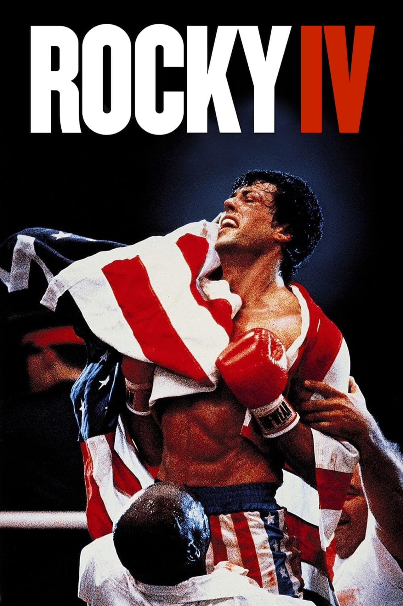

Rocky IV
7 de Marzo 1986 | 1h 31min | Acción, Drama
Dirigido por: Sylvester Stallone
Guión: Sylvester Stallone, Jeb Stuart
Reparto: Sylvester Stallone, Talia Shire, Burt Young, Carl Weathers, Dolph Lundgren
Sinopsis
Una vez derrotado con mucho esfuerzo al peligroso Clubber Lane, el boxeador Rocky Balboa puede disponer de una vida plácida al lado de los que más quiere. Ahora, él y su antiguo rival Apollo Creed son además los mejores amigos, habiendo olvidado sus amargos días de enemistad.
Sin embargo, cierto día Creed combate con el boxeador ruso Ivan Drago, formidable contrincante entrenado inhumanamente en la Unión Soviética que nunca ha perdido un encuentro, y que posee unos métodos sangrientos y brutales. Como resultado, Apollo muere en pleno ring, y Rocky ha de afrontar la muerte del que ahora descubre que ha sido su mejor amigo.
Rocky se propone restaurar el honor de Creed, y desafía a Ivan Drago a un combate que será el más difícil de toda su carrera, y que pondrá a prueba toda su habilidad pugilística. Drago recibe diariamente un fuerte entrenamiento por medio de máquinas y otros ingenios soviéticos, y parece que el Potro Italiano no lo tendrá nada fácil para vencerlo.
Crítica
Rocky IV es una explosiva mezcla de boxeo y propaganda de la Guerra Fría, donde Sylvester Stallone enfrenta al imponente Ivan Drago, interpretado por Dolph Lundgren. Aunque la historia es simple y los diálogos limitados, la película brilla por su intensidad visual, sus icónicos entrenamientos, y una banda sonora inolvidable. Es menos una historia profunda y más un espectáculo de fuerza, patriotismo y redención. Para algunos, es una exageración del personaje; para otros, una de las entregas más entretenidas de la saga. Lo cierto es que Rocky IV se convirtió en un clásico del cine deportivo por su energía y emoción.